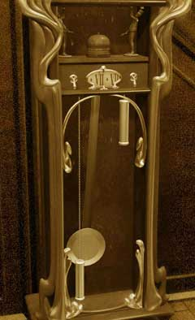
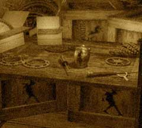

| 概要 | 地図 |
| 淡いヒント集 | ヒント集 | 的確なヒント集 |
| 攻略最短ルート |
| 場所選択に戻る |
夢の世界
|

時間を進めるために、時計の右側のおもりを上に上げてみよう。針の付いた時計が右回り(時計回り)に回転を始めるはずだ。これにより、世界の時間が進み始める。 次に、文字盤だけの時計を工場の始業時間に合わせよう。そして、ベルをクリックして鐘突人形に、ベルをたたかせよう。そうすれば、ボラルバーグは工場へと出かけていくはずだ。 もし、始業時間が分からないのならば、上の画像を見るとよい。ヒントにはなるだろう。 
ボラルバーグが出ていったら、部屋を調べよう。上の画像、右下にある机の上に、屋根裏へ続く扉の鍵が置いていある。 この鍵を手に入れたら、二階へ行き扉を開けよう。 
ハンスは物作りに熱中している。そのために、あなたがいくら話しかけても反応すらしてくれない。 そこで、彼が最も興味のある「マンモスの人形」をプレゼントしよう。マンモスの人形に触れたハンスは、幼少の姿から現実世界の老人へと姿を変えるはずだ。

あなたの前からハンスは姿を消した。これはつまり、彼が夢の世界から抜け出したと言うことである。 次は、あなたがこの世界から抜け出す番だ。ハンスはマンモスの人形を手にすることで、現実世界へ戻ることができた。では、今あなたのそばに現実世界と通じるものはあるだろうか? 机の上にある作りかけのオスカーがそれである。
| << 前へ |
|
| 場所選択に戻る |
| 概要 | 地図 |
| 淡いヒント集 | ヒント集 | 的確なヒント集 |
| 攻略最短ルート |
Syberia II
| 目次へ戻る | ページの上部へ |